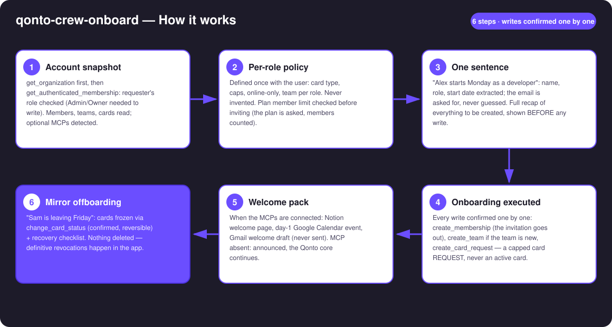
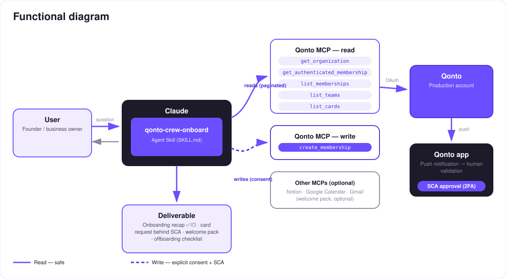

One-sentence financial onboarding for every new hire — invitation, capped card, welcome pack.
Every new hire triggers the same manual ritual: invite them on Qonto, create their card with the right caps, prepare day one — and every departure triggers the reverse, usually too late. The skill turns both into one sentence:
Defined once with the user — card type, caps, online-only, team per role. Never invented: an unknown role triggers questions.
"Alex starts Monday as a developer": invitation sent, team created if new, a capped card request that conforms to the policy.
Notion page, day-1 Google Calendar event, Gmail draft — when those MCPs are connected; otherwise announced, core continues.
"Sam is leaving Friday": cards frozen (reversible) + recovery checklist. Nothing deleted — revocations stay in the app.
Would someone use this on a Monday morning? That's literally when new hires show up.
| Prerequisite | Detail | Required |
|---|---|---|
| Qonto production account | Adapts to any organization — get_organization first, nothing hardcoded | ✅ |
| Country | Universal — memberships, teams and cards work the same in every Qonto country (FR, DE, ES, IT, AT, NL, BE, PT) | ℹ️ |
| Qonto MCP connected | Official connector (claude.ai / Claude Desktop), OAuth login | ✅ |
| Admin/Owner role | Inviting and requesting cards require it — checked via get_authenticated_membership, honestly announced otherwise | ✅ |
| Per-role policy | Decided by the user, never by the skill | ✅ user-decided |
| Seats left on the plan | Grid not readable via MCP (get_subscription → 403) — the skill asks the plan and counts members before inviting | ℹ️ verified by asking |
| Notion · Google Calendar · Gmail | Optional welcome pack, detected dynamically | ⭕ |

list_memberships, invitation skipped with the reasoncreate_team only when the team truly doesn't existget_subscription returns 403 on the connector → the skill asks the plan, counts members, warns before inviting
The security model, not a limitation: reads are risk-free; every write requires explicit confirmation in the conversation. The card is never created directly — create_card_request files a policy-compliant capped request, approved in the Qonto app by an Admin/Owner with their own SCA. And offboarding freezes, it doesn't delete.
| Role | Card | Monthly cap | Online-only | Team |
|---|---|---|---|---|
| Developer | Virtual | €200 | Yes | Tech |
| Account executive | Physical | €1,000 | No | Sales |
| Ops | Virtual | €500 | Yes | Operations |
⚠️ This table is made up for illustration. The policy is always decided by the user — an unknown role triggers questions, never a guess.
| Step | Who | Detail |
|---|---|---|
| Freeze the cards | The skill (change_card_status, confirmed) | Reversible — that's the point: nothing irreversible |
| Physical card recovered | Checklist | Along with equipment (laptop, badge…) |
| Accesses and tools | Checklist | Internal apps, pending expense claims, email forwarding |
| Member deactivation | The Qonto app | Definitive revocation — never done by the skill |
| Output | Format | When |
|---|---|---|
| Conversation reply | Markdown tables: recap (✅ done / 🕐 pending SCA / ⏭ skipped), card-request status, checklist | Always — the baseline |
| Onboarding sheet | One-page HTML file/artifact: who arrives, when, what's ready, what's pending | When the host renders files; automatic fallback to tables |
| Notion page · Calendar event · Gmail draft | Welcome pack (the draft is never sent by the skill) | When those MCPs are connected |
The ≤ 3-minute demo attached to the PR walks through: the manual ritual → the policy defined once → "Alex starts Monday as a developer" → the invitation out, the capped card request awaiting SCA, the welcome page ready → the one-command offboarding freeze. Fictional names, test accounts. The detailed shooting script is kept internal (outside the repo).
| Idea | Effort | Note |
|---|---|---|
| Policy persisted in a Notion doc, re-read on every arrival | Low | Optional multi-MCP — the policy lives with the user |
| Batch onboarding ("3 interns start on the 1st") | Low | Same workflow, grouped recap, one-by-one confirmations |
| D-1 reminder to the manager (Google Calendar) | Low | Dynamic MCP detection |
Card-request tracking (list_requests) | Low | "Where is Alex's card?" |
| Bridge with qonto-reimburse-batch | Medium | The new hire's first expense claims — shared member reads |
create_membership, create_team, create_card_request, change_card_status) confirmed one by one; a pending request is never presented as doneget_subscription 403) → plan asked, members counted, warning before inviting